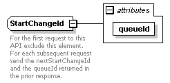

| diagram |  | ||||||||||||
| namespace | http://www.cisco.com/AXL/API/10.5 | ||||||||||||
| type | extension of xsd:integer | ||||||||||||
| properties |
|
||||||||||||
| used by |
|
||||||||||||
| attributes |
|
||||||||||||
| annotation |
|
||||||||||||
| source | <xsd:complexType name="StartChangeId"> <xsd:annotation> <xsd:documentation>For the first request to this API exclude this element. For each subsequent request send the nextStartChangeId and the queueId returned in the prior response.</xsd:documentation> </xsd:annotation> <xsd:simpleContent> <xsd:extension base="xsd:integer"> <xsd:attribute name="queueId" type="xsd:string" use="required"/> </xsd:extension> </xsd:simpleContent> </xsd:complexType> |
| type | xsd:string | ||
| properties |
|
||
| source | <xsd:attribute name="queueId" type="xsd:string" use="required"/> |